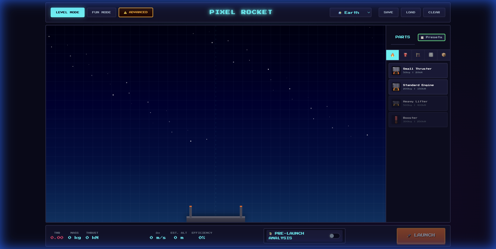

The simulation utilizes a high-frequency integration loop. Every frame, the engine calculates the summation of all vector forces acting on the rocket's center of mass.
Calculated using Temporal Sub-stepping. The engine runs 5+ sub-iterations per visible frame to maintain accuracy at orbital velocities (7.8 km/s+).
Density is not a constant. We implement the full ISA lapse rate to model how the environment changes as you ascend.
| Troposphere | Lapse Rate: -6.5 K/km |
| Dynamic Pressure | Q = 0.5 * rho * v^2 |
| Mach Regimes | Subsonic to Supersonic Transitions |
In Advanced Mode, the system ceases to be a simple 2D scroller and becomes a true orbital simulator. Position and velocity are integrated relative to the planetary centroid.
The code is a masterpiece of modularity, designed for zero-dependency performance.
[ main.js ] -> [ orchestrates ] -> [ physics.js | editor.js | advanced.js ]